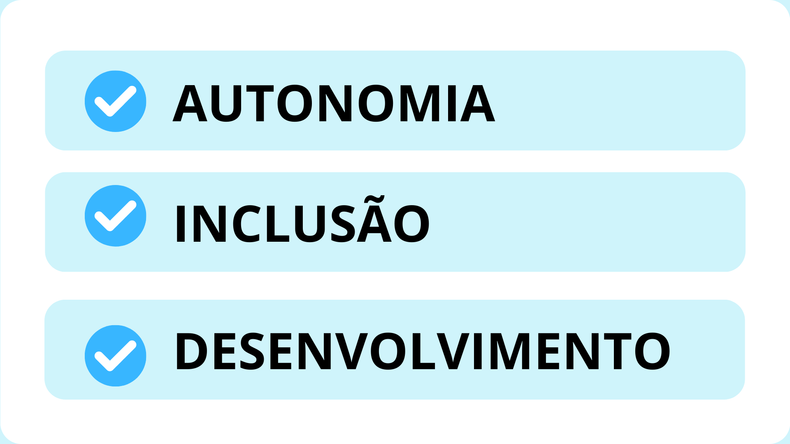

FAZENDO A HISTÓRIA
QUEM SOMOS?
O projeto Fazendo a História foi desenvolvido por mim, Brenda Zucatti,
estudante do Ensino Médio Senac de Santa Cruz do Sul. Os livros são resultado de um
projeto de pesquisa que foi produzido ao longo de dois anos, voltado para crianças com
Transtorno do Espectro Austista. O projeto buscou auxiliar crianças com TEA em seu
desenvolvimento psicomotor e de habilidades, de forma a facilitar sua interação com
outras pessoas no cotidiano, sua compreensão de linguagem não verbal e sua motivação
e interesse por atividades pedagógicas.
